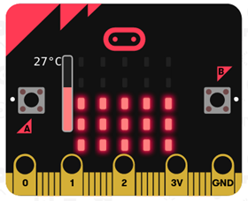

Reto 10 Mostrar temperatura en barras.
Se trata de encender o apagar filas de leds en función de temperatura.
• Si la temperatura es inferior a 25ºC, no se enciende ninguna fila de leds.
• Si la temperatura está entre 25 (incluido) y 26 ºC, se encienden los leds de la 1ª fila empezando por abajo.
• Si la temperatura está entre 26 (incluido) y 27 ºC, se encienden los leds de la 1ª y 2ª fila empezando por abajo.
• Si la temperatura está entre 27 (incluido) y 28 ºC, se encienden los leds de la 1ª, 2ª y 3ª fila empezando por abajo.
• Si la temperatura está entre 28 (incluido) y 29 ºC, se encienden los leds de la 1ª, 2ª, 3ª y 4ª fila empezando por abajo.
• Si la temperatura es superior o igual a 29 ºC, se encienden todos los leds.Nivel: Inicial
